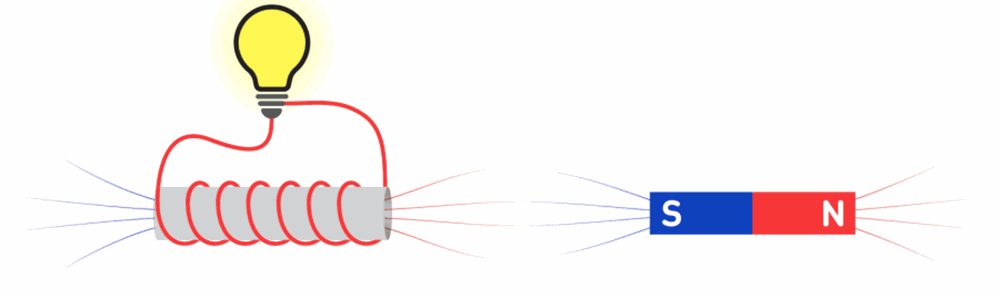

Electricity and magnetism are two fundamental concepts in physics. Electricity refers to the flow of electrical charge, which can occur through the movement of electrons in conductive materials such as metals or through the ionization of gases or liquids. It is the foundation of many modern technologies, including lighting, computing, and communication. Magnetism, on the other hand, is the property of certain materials to exert attractive or repulsive forces on other materials. This force arises from the motion of charged particles within the material, such as electrons, and can be harnessed to generate electricity through the use of electric generators. Magnetism is also responsible for the behavior of compasses and is used in many everyday devices, such as speakers, motors, and MRI machines. Electricity and magnetism are intimately related, as changing electric fields can generate magnetic fields and changing magnetic fields can generate electric fields. This relationship is described by Maxwell's equations, which provide a unified theory of electromagnetism.
Electromagnetism
Electric and Magnetic Fields
Electricity and magnetic fields are closely related and are two aspects of the same fundamental force, known as the electromagnetic force. This force is one of the four fundamental forces in nature, along with the strong nuclear force, weak nuclear force, and gravity. Electricity is the flow of charged particles, typically electrons, through a conductor. This flow of electrons creates an electric field around the conductor, which can be measured using an instrument called a voltmeter. An electric field is a region in space where electrically charged objects experience a force. The strength of the electric field depends on the amount of charge and the distance between the charged objects. Magnetic fields, on the other hand, are created by the motion of charged particles. When an electric current flows through a conductor, it creates a magnetic field around the conductor. Magnetic fields can also be created by magnets, which have north and south poles that create a magnetic field around them. The strength of the magnetic field depends on the strength of the magnet and the distance from the magnet. One of the most interesting aspects of electricity and magnetic fields is that they are interrelated. When an electric current flows through a conductor, it creates a magnetic field around the conductor. Similarly, when a magnetic field changes, it creates an electric field. This phenomenon is known as electromagnetic induction and is the basis for many of the electrical devices we use today, such as generators and transformers. In summary, electricity and magnetic fields are closely related aspects of the electromagnetic force. Understanding the relationship between these two forces is crucial for developing many of the electrical devices we use in our everyday lives.
Here are ten things that we use every day that rely on electricity and magnetism:
Refrigerators :
The motor inside a refrigerator runs on electricity and uses magnets to turn the compressor.
Televisions :
Modern televisions use electromagnets to control the electron beam that creates the images
on the screen.
Computers :
Computers use electricity to power their circuits and store information magnetically on
hard drives.

Smartphones :
Smartphones use electricity to power their screens, processors, and wireless communication,
which relies on electromagnetic signals.
Electric Lights :
Most light bulbs rely on the electrical resistance of a filament to produce light.

Electric Motors :
Many appliances and tools, such as blenders, power drills, and vacuums, use electric motors
that rely on magnets to create motion.
Speakers :
Speakers use an electromagnet to vibrate a diaphragm and create sound waves.
Doorbells :
Doorbells use an electromagnetic coil to create a magnetic field that pulls a metal striker
to create a sound.
Electric Clocks :
Electric clocks use the oscillations of an electromagnetic circuit to keep time accurately.
Credit and Debit Cards :
The magnetic stripe on credit and debit cards stores information
about the account that can be read by a card reader, which relies on electromagnetism.

Electricity
Electricity is a form of energy resulting from the movement of charged particles,
such as electrons or ions. It is a fundamental force of nature and is essential
for the functioning of modern society. Electricity can be generated in various
ways, such as through chemical reactions in batteries, through the movement of
a magnet in a wire coil, or by harnessing the energy of falling water in
hydroelectric power plants. Once generated, electricity can be transmitted over
long distances through power lines and then distributed to homes, businesses,
and other facilities. Electricity has many important applications, such as
powering electronic devices, providing lighting, heating and cooling buildings,
and operating industrial machinery. It is also used in medical equipment,
communication systems, transportation, and many other areas of modern life. The
study of electricity is a branch of physics and is important for understanding
the behavior of matter and the workings of the universe.
Electromagnetic Induction
Electromagnetic induction is a phenomenon in which an electric current is induced
in a conductor when it is moved through a magnetic field or when a magnetic field
is changed around it. This was first discovered by Michael Faraday in the 1830s.
When a conductor, such as a wire, is moved through a magnetic field, the magnetic
field exerts a force on the moving electrons in the wire, causing them to flow and
generate an electric current. The strength of the induced current depends on the
strength of the magnetic field, the speed of the movement, and the angle between
the conductor and the magnetic field. Similarly, when a magnetic field is changed
around a stationary conductor, such as a coil of wire, an electric current is also
induced. This is the principle behind the operation of generators, which convert
mechanical energy into electrical energy by rotating a coil of wire through a
magnetic field. Electromagnetic induction has many practical applications, such as
in electric generators, transformers, and induction motors. It is also used in
wireless charging and wireless power transfer technologies. The discovery of
electromagnetic induction was a significant milestone in the development of the
field of electromagnetism and has had a profound impact on modern technology.
Magnet
A magnet is an object that produces a magnetic field. It is typically made of a
material that contains atoms with unpaired electrons, which create a magnetic
moment. When these magnetic moments are aligned in the same direction, they create
a stronger magnetic field. There are two types of magnets: permanent magnets and
electromagnets. Permanent magnets, such as those found in refrigerator magnets or
in compasses, produce a magnetic field that is always present. Electromagnets, on
the other hand, are created by passing an electric current through a coil of wire.
The magnetic field is produced by the flow of electrons in the wire and can be
turned on or off by controlling the flow of current. Magnets have many applications
in daily life, such as in electric motors, MRI machines, speakers, and credit card
strips. They are also used in industry for things like separating metal from waste
and lifting heavy objects.
Magnetic Force
Magnetic force is the force that arises between two magnetic objects or a magnetic
object and a moving charged particle. It is one of the four fundamental forces of
nature, along with gravity, electromagnetic force, and strong and weak nuclear
forces. Magnetic force is caused by the interaction of magnetic fields. When two
magnets are brought close together, their magnetic fields interact, and they either
attract or repel each other depending on the orientation of their magnetic fields.
If the north pole of one magnet is brought close to the south pole of another magnet,
they will attract each other. But if the north pole of one magnet is brought close to
the north pole of another magnet, they will repel each other. Similarly, magnetic
force can act on a moving charged particle. When a charged particle moves through a
magnetic field, it experiences a force perpendicular to both its velocity and the
magnetic field. This force is called the Lorentz force and is given by the equation
F = q(v x B), where F is the force, q is the charge of the particle, v is its velocity,
and B is the magnetic field. Magnetic force plays an important role in many everyday
applications, such as in electric motors, generators, and transformers. It is also used
in medical imaging techniques like MRI (magnetic resonance imaging).
Magnetic Poles
In a magnet, there are two magnetic poles: the north pole and the south pole. These
poles are the points on the magnet where the magnetic field lines emerge and converge,
respectively. The north pole of a magnet is the point from which the magnetic field
lines emanate, and the south pole is the point towards which the magnetic field lines
converge. These magnetic poles are named based on their behavior in the Earth's
magnetic field, with the north pole of a magnet pointing towards the Earth's north
magnetic pole and the south pole pointing towards the Earth's south magnetic pole.
The behavior of magnets can be explained by the interaction of their magnetic poles.
When two magnets are brought near each other, their north poles repel each other, and
their south poles repel each other as well. On the other hand, the north and south
poles of two different magnets attract each other. The strength of a magnet is
determined by the strength of its magnetic poles. The magnetic force between two
magnets depends on the strength of their poles and the distance between them. A strong
magnet will have more aligned magnetic domains, resulting in stronger magnetic poles.
Magnetic poles also play a crucial role in the applications of magnets. For example,
in an electric motor, a magnetic field is created by the interaction of the magnetic
poles of a stationary magnet and a rotating magnet. This magnetic field produces a
force that causes the motor to rotate.
Summary
Electricity and magnetism are two closely related phenomena that are fundamental to many aspects of modern physics and technology. Electricity refers to the flow of electric charge, usually through conductive materials such as wires or circuits. Electric charge can be positive or negative, and it is measured in units of Coulombs. The behavior of electric charges is governed by Coulomb's law, which states that like charges repel each other, while opposite charges attract each other. Magnetism refers to the behavior of magnets and magnetic fields. A magnetic field is a force field that surrounds a magnet and can exert a force on other magnetic objects or charged particles. The behavior of magnets is governed by the laws of magnetism, which state that opposite poles of magnets attract each other, while like poles repel each other. Electricity and magnetism are closely related because they both involve the movement of electric charges. Moving electric charges can generate magnetic fields, and changing magnetic fields can generate electric fields, according to Faraday's law and Maxwell's equations. Many modern technologies, such as electric generators, motors, and transformers, rely on the interaction between electricity and magnetism. Electromagnetic waves, such as radio waves, microwaves, and visible light, are also examples of the close relationship between electricity and magnetism.